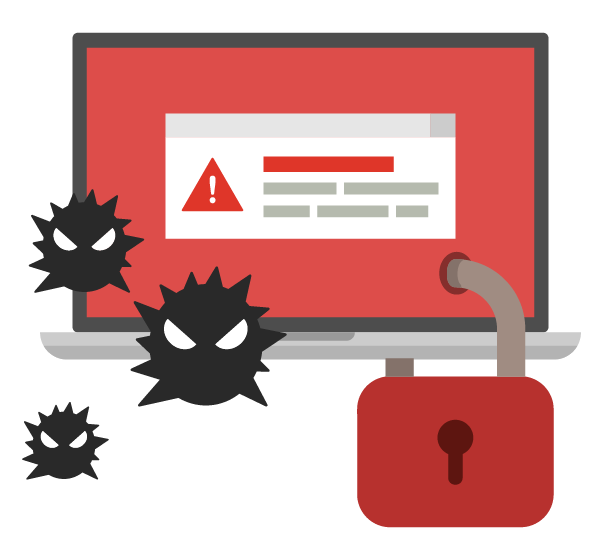

Veille Technologique
THEME DE LA VEILLE :
Les nouvelles Cyber-Attaques
Des telechargements pirates contiendraient des malwares de
crypto-minage

Source: The Hacker News
Date: 23-12-2021
Pertinence:
Des torrents du film 'Spiderman : No way Home' seraient accompagnés de logiciels malveillant infestant le poste de l'utilisateur. Ce malware ne serait pas répertorié par VirusTotal et serait utilisé pour miner de la crypto-monnaie sur la machine à l'insu de l'utilisateur du poste infesté.
La faille Log4shell recuperee par les rancongiciels
Source: L'Usine Digitale
Date: 23-12-2021
Pertinence:
La faille Log4shell de la bibliothèque de journalisation Log4j permet un accès à un serveur vulnérable par un attaquant sans qu'il n'ait besoin de s'authentifier. Les Ransomwares Khonsari, TellYouThePass, et Conti exploitent cette vulnérabilité pour obtenir un accès à des machines et ensuite se déplacer sur des serveurs vulnérables
Volvo Cars victime d'un vol de donnees concernant sa
R & D
Source: L'Usine Digitale
Date: 13-12-2021
Pertinence:
Volvo Cars a ete victime d'une cyberattaque. Vendredi 10 décembre 2021, "l'un des référentiels de fichiers du constructeur a été illégalement consulté par un tiers". Une quantité limitée de données concernant la R&D du constructeur a été
volée durant cette intrusion.
Cette cyberattaque n'a pas d'effet sur la sécurité des véhicules et des données de ses clients.
Cyberattaque Montpellier : rancon reclamee a Orchestra

Source: Actu.fr
Date: 26-11-2021
Pertinence:
Le 26 novembre, Orchestra a subi une cyber-attaque de type Rancomware. Cette cyber-attaque, par des hackers non identifiés, a entraîné le blocage des paiements par cartes bancaires dans les terminaux des boutiques, ainsi des milliers de données de clients piratées.
Le fabricant pharmaceutique Fareva bloque par une cyberattaque
Source: Zdnet.fr
Date: 05-01-2021
Pertinence:
La société Fareva, travaillant sur la commercialisation d’un vaccin contre la Covid-19, est paralysée depuis le 15 décembre par une cyberattaque de type rançongiciel.
Une femme decede au cours d’un ransomware dans un hopital allemand

Source: BfmTV
Date: 05-01-2021
Pertinence:
Un ransomware a touché un hôpital universitaire a dusseldorf, paralysant le bon fonctionnement des services. Une femme devait être opérée en urgence, et a dû être transferée, mais est décédée pendant le transfert.
Une enquête a néanmoins
annoncé que la femme n'aurait survécu dans aucun cas. La gravité de l'acte n'en change pas pour autant.